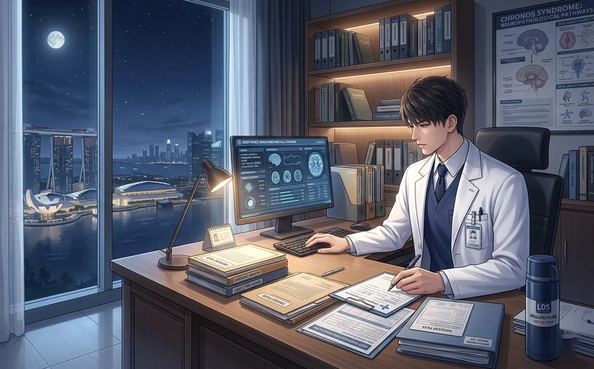
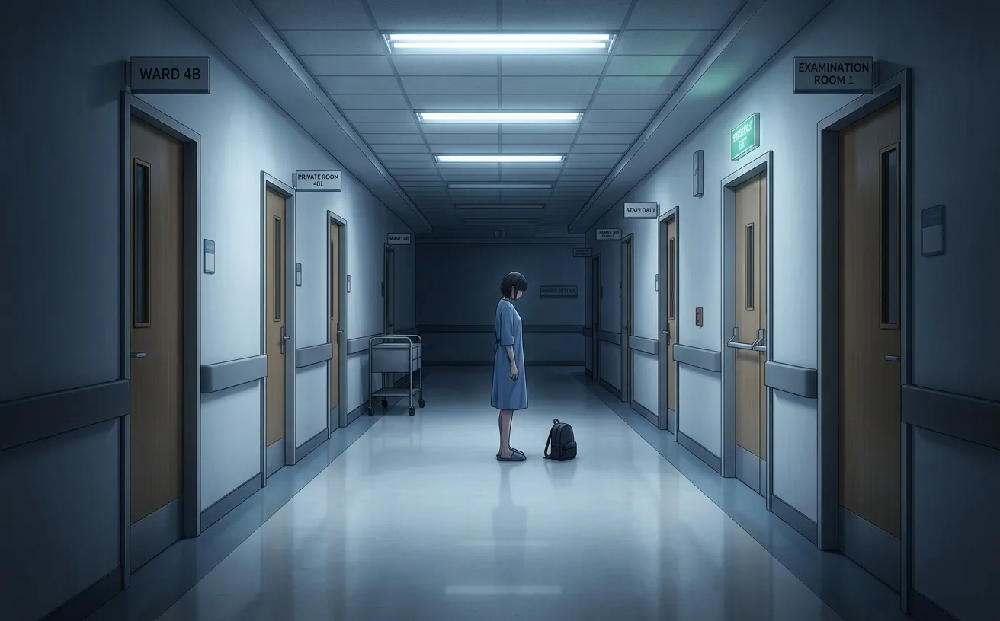
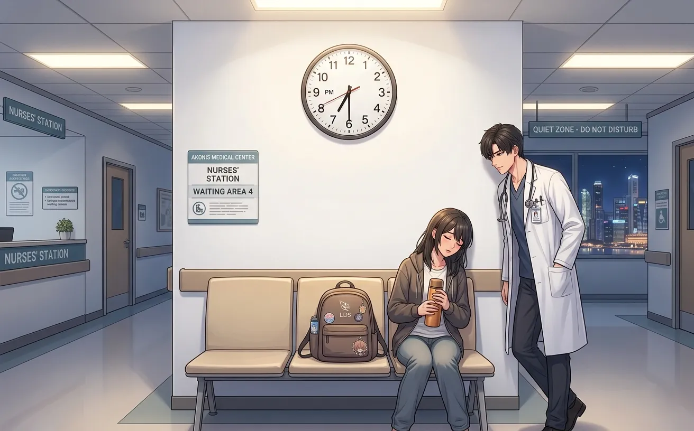
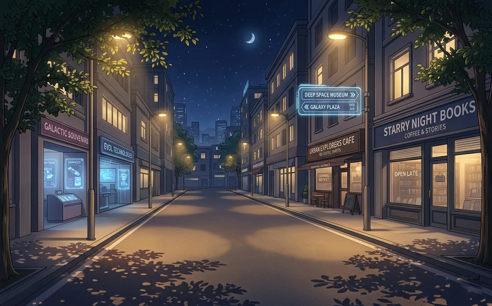
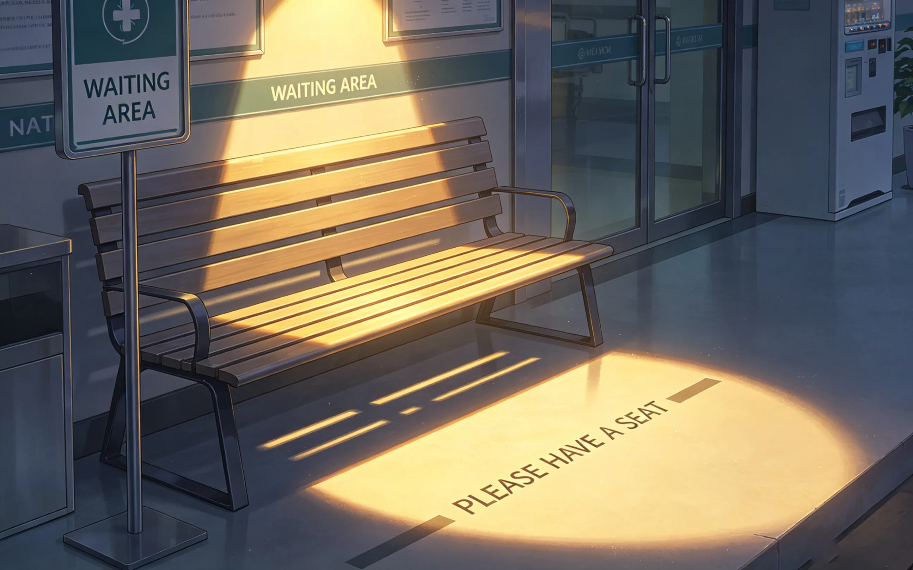
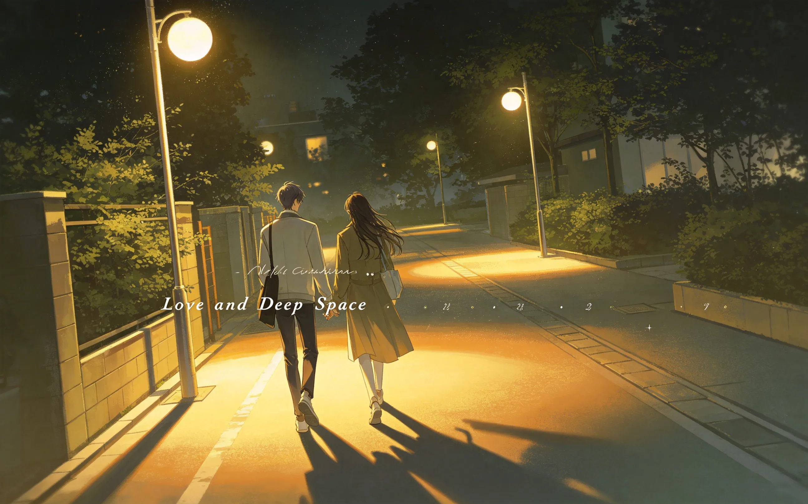
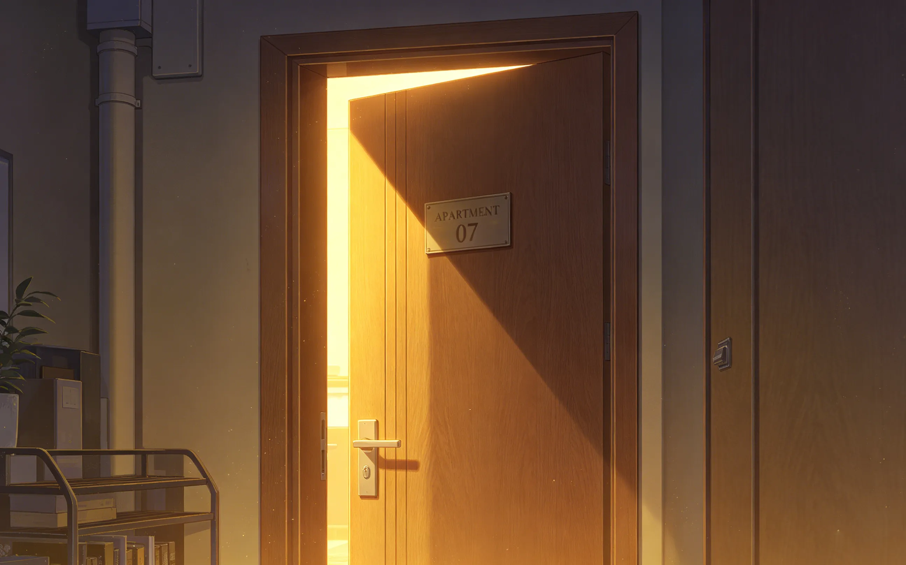
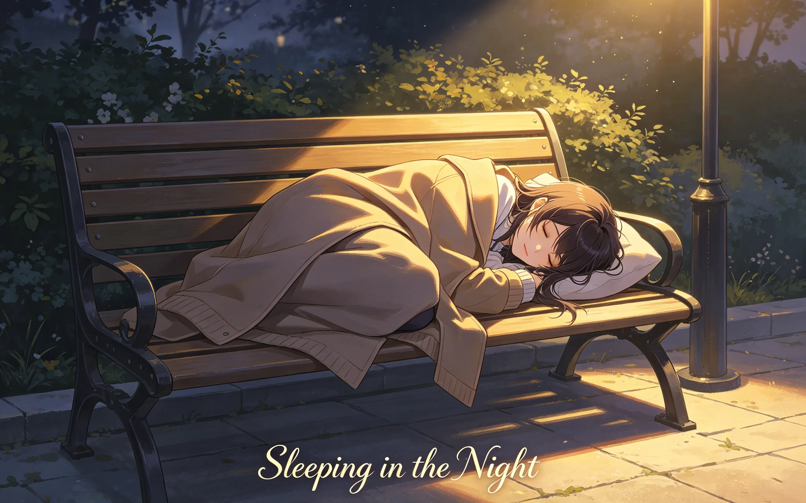

zayne never left work on time. there was always another patient. always another surgery. always another reason to stay. until her.
zayne had never left work on time.
not once. not in all the years he'd worked at akso hospital. there was always one more patient. one more chart. one more reason to stay.
he told himself it was dedication. he told himself it was responsibility. he told himself it was because people needed him.
he never told himself the truth.

she asked him on a wednesday.
he was in his office, hunched over a stack of charts. the door was open. it was always open now.
she was in the chair across from him. the one she had claimed months ago. the one he thought of as hers.
“zayne.”
“mm.”
“what time do you finish today?”
he looked up. “late.”
“how late?”
he glanced at the clock. “eight. maybe nine.”
she was quiet for a moment. then: “can you leave earlier?”
he didn't answer. he didn't know how to say no to her. he also didn't know how to say yes.
“i'll think about it,” he said.
she smiled. small. hopeful. “that's all i ask.”
he thought about it all day.
during rounds. during surgery. during the endless parade of patients.
he could leave early. technically. he was the chief of surgery. no one would stop him.
but there was always something. a consult. a follow-up. a patient who needed reassurance.
he had built his life around these somethings. they filled the hours that would otherwise be empty.
he believed that. he still believed it. but he was starting to wonder if it was true.
or if it was just an excuse.

at six o'clock, he had a break between patients.
he looked at his phone. no messages from her. she was probably home already. probably cooking. probably waiting.
he had three more consults. two charts to finish. one patient in recovery who needed checking.
he could be done by eight. maybe nine.
he thought about her sitting in his office. about the way she asked. about the hope in her voice.
he picked up his phone. typed: “i'll try.”
she replied immediately. “i'll wait.”
he put the phone down. stared at the charts. didn't see them.

at seven, he was still there.
he had finished two consults. one chart. the patient in recovery was stable.
he had one consult left. one chart. he could finish them both in an hour. maybe less.
or he could leave them for tomorrow.
the thought felt foreign. wrong. he never left things for tomorrow.
but she was waiting.
he stood up. picked up his coat. walked to the door.
stopped. looked back at his desk. at the unfinished charts. at the phone. at the thermal bottle she had given him.
he turned off the light. walked out.

the hospital lobby was quiet. the night shift had just started. people nodded at him as he passed.
he walked to the entrance. pushed the doors open. the air was cold. the sky was dark.
he stood there for a moment. breathing. feeling the cold on his face.
he couldn't remember the last time he had left before eight.
he couldn't remember the last time he had left when there was still light outside.
“you're still here,” he said.
“i said i would wait.”
“i thought you meant at home.”
“i didn't.”
she stood up. brushed off her coat. smiled. “you left early.”
“not really.”
“earlier than usual.”
he didn't argue. he didn't want to.

he sat down on the bench. she sat next to him.
they didn't speak. the city was quiet. the hospital was behind them. the street was empty.
“why did you wait?” he asked.
“because you said you'd try.”
“i didn't promise.”
“you didn't have to.”
“what if i didn't come out?”
“then i would have waited longer.”
he didn't know what to say. so he said nothing.
they sat there. under the streetlight. in the cold. not talking. not needing to.

they walked home together.
not to his apartment. to hers. she lived closer. he didn't ask why they were going there. he didn't need to.
the streets were empty. the shops were closed. the only light came from the streetlamps and the moon.
“this is nice,” she said.
“what is?”
“walking. with you. not in a hurry.”
he thought about it. “i'm always in a hurry.”
“i know.”
“i don't know how not to be.”
“no,” he said. “i'm not.”
she smiled. started walking again. he followed.
they didn't talk much after that. but the silence was comfortable. the way it always was with her.

they reached her building. she stopped at the door. turned to face him.
“thank you.”
“for what?”
“for trying.”
he nodded. “goodnight.”
“goodnight, zayne.”
she went inside. the door closed. he stood there for a moment.
he stood there. looking at the door. thinking about the bench. the walk. the way she smiled when he said he wasn't in a hurry.
he stayed for five minutes. maybe ten. he didn't count.
then he turned and walked home. the streets were still empty. the moon was still there.
he felt lighter. he didn't know why.
he left early again the next week.
and the week after that.
not every day. not even most days. but sometimes.
he started finishing charts before leaving. started planning his days differently. started thinking about her when he looked at the clock.
he didn't tell anyone. not the nurses. not the other doctors. not her.
but she noticed.
“more than sometimes.”
he shrugged. “maybe.”
she didn't push. she never pushed. she just smiled. and he kept leaving earlier.

one night, she fell asleep on the bench.
he came out at seven-thirty. earlier than usual. he had rushed through his last consult, skipped the chart, left before he was ready.
she was curled up on the bench. her coat pulled tight. her eyes closed.
he stood there. looking at her.
she looked small. vulnerable. peaceful.
he sat down on the bench. close to her. not touching. just... there.
she stirred. didn't wake.
he looked at the hospital. at the lights in the windows. at the people still working.
for years, that had been him. the one still working. the one who never left.
now he was here. on a bench. in the cold. waiting for her to wake up.
he didn't mind.
she woke up twenty minutes later.
“zayne?” her voice was groggy. “what time is it?”
“seven-fifty.”
“you're early.”
“i know.”
she sat up. rubbed her eyes. looked at him. “you waited.”
“you were asleep.”
“you could have woken me.”
“i didn't want to.”
“you're smiling.”
he touched his face. he was. he hadn't noticed.
“it's cold,” he said. “let's go.”
she stood up. stretched. smiled. “okay.”
they walked home. the streets were empty. the moon was high. they didn't talk much.
but she was smiling too.
zayne still worked late. most nights. there were still patients. still surgeries. still charts.
but sometimes, he left early.
not because there was nothing left to do. because there was someone waiting.
he learned that the hospital would still be there tomorrow. that the charts could wait. that the patients would be cared for by someone else.
he learned that he wasn't indispensable. that the world didn't end when he turned off his light.
and he learned that sitting on a bench in the cold, waiting for her to wake up, was worth more than any consult.
she didn't say anything. she didn't have to.
she just took his hand. and they walked home together.